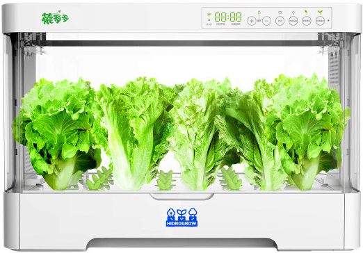
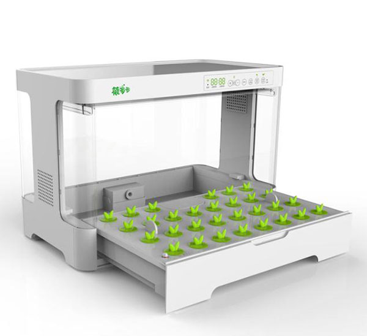
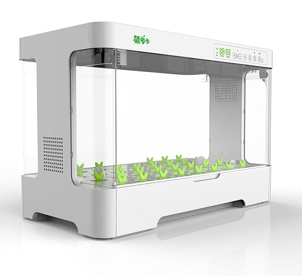
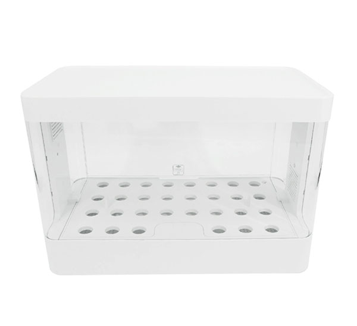
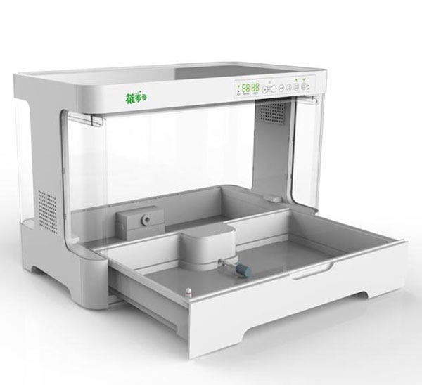

Cultivá en tu hogar.
Realizá un seguimiento personalizado de tus cultivos hidropónicos 100% online.
COMPRAR Plantar una semilla o un clon

Emparejar y monitorear a través de la aplicación
Disfrutá lo cultivado
Elegí tus semillas o clones favoritos.
Monitoreá el crecimiento.

Cultivá.
Caja de cultivo autónoma sin necesidad de conocimientos ni experiencia previa. Piense en HidroGrow como el primer automóvil sin conductor para el cultivo hidropónico.
Diseñado para simular las condiciones naturales ideales de su planta específica, HidroGrow ofrece agricultura de precisión para obtener rendimientos dignos de presumir utilizando un espacio mínimo.
El sistema de iluminación se ajusta automáticamente según la etapa de crecimiento de su planta.
En la agricultura tradicional es un arte, pero la hidroponía es una ciencia en la que todos los elementos que determinan el crecimiento de las plantas están bajo control.
La composición de la solución nutritiva concentraciones suficientes de nitrógeno, potasio, fósforo, calcio, magnesio y azufre, además de otros elementos adicionales en menor cantidad. Muchos se obtienen de sales, pero también se pueden suplementar o incluso sustituir por fertilizantes orgánicos, como estiércol de ganado o guano de pájaros. Otras posibles fuentes de nutrientes son compuestos orgánicos como harina de pescado, restos de madera o cereales, o algas marinas.
En los cultivos hidropónicos las plantas extraen los nutrientes de la solución ya mencionada, pero aún así necesitan un soporte para la planta y que las raíces tengan suficiente aireación. Estos son algunos de los sustratos más usados:
Un cultivo hidropónico requiere más tecnología y precisión que uno convencional. Estos son algunos de los instrumentos y equipos necesarios:
Casi cualquier planta puede cultivarse con hidroponía, sin embargo, hay ciertas plantas hidropónicas que resultan especialmente rentables:
Judía verde, coliflor, col, apio, brócoli, lechuga, guisante, puerro, espinaca.
Zanahoria, remolacha, pepino, berenjena, cebolla, pimiento, rábano, calabacín, tomate.
Melón cantalupo, fresa, frambuesa, arándano, uva. Además, frutos de árbol como limón o manzana empleando árboles enanos.
Albahaca, cilantro, menta, tomillo, salvia, estragón, romero.
|

|
||
|

|

|

|
| Product Name | LED Intelligent Hy droponic Syetem |
| Model | SPZW-A01WU1 |
| Water channel capacity (L): | 4 | Color | Pearl White | Product size | 500*270*340mm |
| Host weight (kg) | 5.1 |
| Texture of material | PS,PC,PP |
| Pore Position (Plant) of Leaf Vegetable Planting | 30 |
| Power Supply-Input | AC100-240V,50Hz/60Hz |
| Power Supply-Output | DC12V/3.0A |
| Voltage | DC 12V |
| Rated voltage (W) | 20 |
| Consume electric quantity (kW·h/24h) | 0.2 |
| Key mode | Touch |
| Outer packing of products | 650*400*520mm |